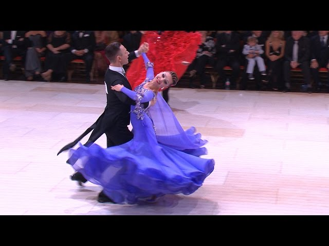
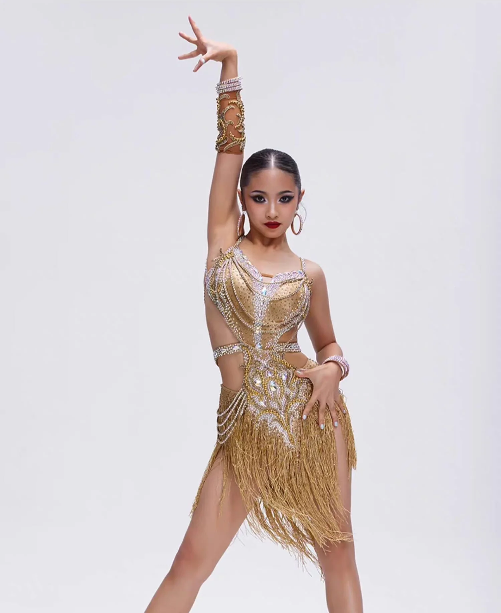
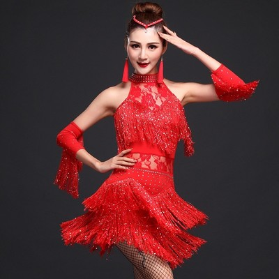
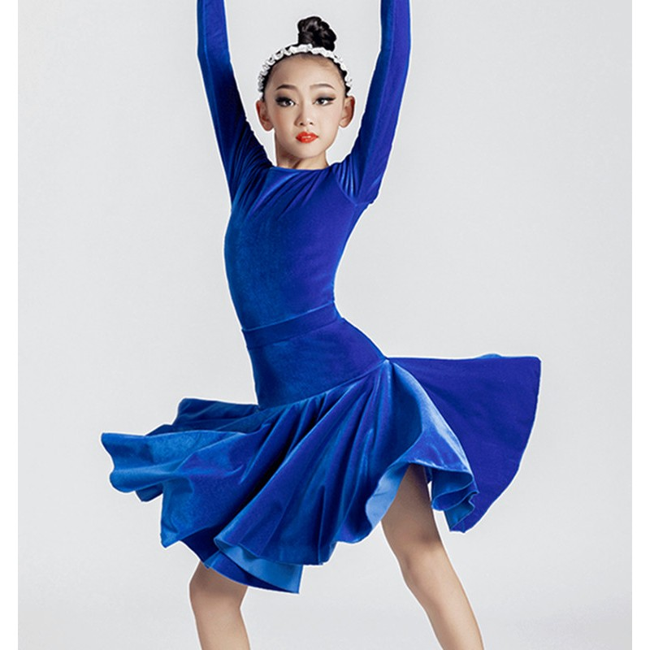
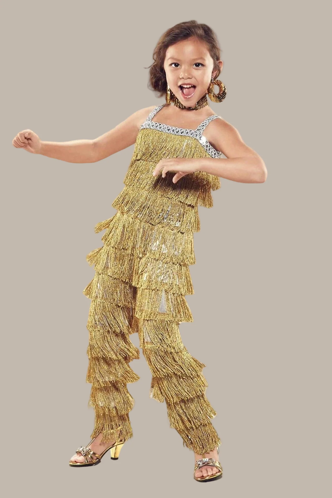
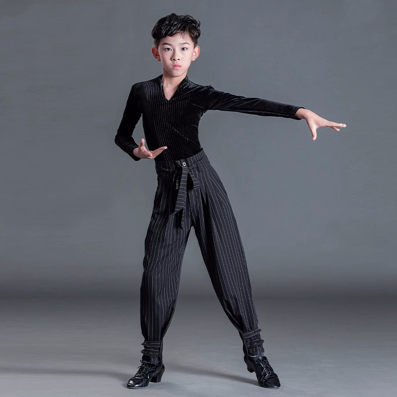
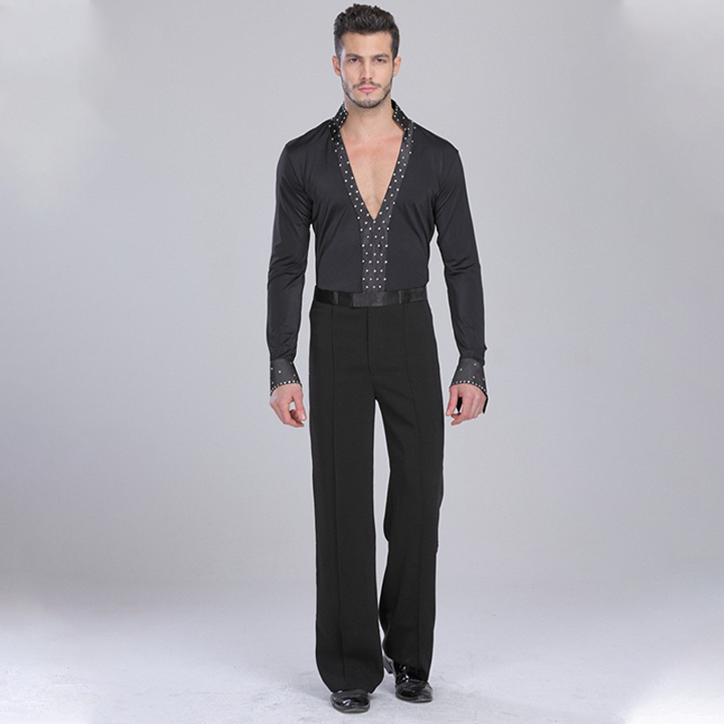

What is Ballroom Dance?
Ballroom dance is a beautiful style of partner dancing practiced around the world, both socially and in competitions. It involves two dancers moving together in harmony, usually as a leader and a follower, expressing rhythm, coordination, and connection through music. Known for its elegance and structured techniques, ballroom dance blends graceful movements with strong partner interaction. Ballroom dance is generally divided into two main styles:
|
 |
The History Of Ballroom Dance
The word “ballroom” originates from the Latin term ballare, meaning “to dance.” Ballroom dancing first developed in the grand courts of Renaissance Europe, where formal dances were a central part of royal celebrations and social gatherings. During this era, dance symbolized grace, sophistication, and high social standing among nobility.
By the 17th and 18th centuries, ballroom dancing became more refined and organized, featuring clearly defined steps and choreographed movements. One of the most notable dances of this period was the minuet, which gained popularity in France. As ballroom dance spread throughout Europe, it absorbed cultural influences, giving rise to a variety of new dance styles.
In the 19th century, ballroom dancing transformed into a widely enjoyed social activity. The waltz revolutionized dance culture by introducing closer partner interaction, challenging traditional norms. Soon after, dances such as the tango, foxtrot, and quickstep emerged in the early 20th century, inspired by jazz rhythms and Latin American influences.
Throughout the 20th and 21st centuries, ballroom dance evolved into both a competitive discipline and a popular form of social expression. International organizations like the World Dance Council (WDC) and the International DanceSport Federation (IDSF) established standardized rules and techniques for competitions.
Today, ballroom dance continues to thrive worldwide, celebrated on competitive stages and popular television shows such as Dancing with the Stars and Strictly Come Dancing, captivating audiences with its elegance and artistry.Popular Styles Of Ballroom Dance
Ballroom dance is rich in variety, blending elegance, emotion, rhythm, and performance. Below are some of the most well-known ballroom dance styles, each offering its own unique character and charm.
- Waltz
- Tango
- Foxtrot
- Quickstep
- Viennese Waltz
- Cha-Cha
- Rumba
- Samba
- Jive
- Passo Doble
- East Coast Swing
- Bolero
- Mambo
The Waltz is a timeless and romantic dance celebrated for its flowing, graceful motion. Originating in 18th-century Austria, it is performed in 3/4 time and is distinguished by its gentle rise-and-fall technique, creating a soft, floating appearance across the floor.
Bold and expressive, the Tango is known for its dramatic intensity and strong partner connection. Developed in Argentina during the late 19th century, it features sharp movements, precise footwork, and a powerful emotional presence.
The Foxtrot emerged in the early 1900s and is admired for its smooth, gliding steps and relaxed elegance. Danced in 4/4 time, it complements jazz and big band music and allows dancers to travel freely with refined control.
Fast, lively, and energetic, the Quickstep evolved from the Foxtrot. It includes quick footwork, light jumps, and playful movement, making it one of the most dynamic and technically demanding ballroom dances.
The Viennese Waltz is a faster version of the traditional Waltz, featuring continuous turning and swift rotations. Originating in Austria, it requires strong posture and stamina to maintain its smooth, uninterrupted flow.
The Cha-Cha is a cheerful and flirtatious Latin dance with Cuban roots. Recognized by its lively rhythm and sharp hip movements, it follows a distinctive “two-three cha-cha-cha” pattern that gives it a playful personality.
Often described as the dance of love, the Rumba is slow and expressive, focusing on controlled movements, strong hip action, and emotional storytelling. It draws inspiration from Afro-Cuban dance traditions.
Originating in Brazil, the Samba is vibrant and full of life. Known for its bouncing action and rhythmic footwork, it captures the festive spirit of Carnival and radiates joyful energy.
The Jive is a fast and energetic dance influenced by American swing and rock-and-roll music. With its kicks, flicks, and upbeat tempo, it is one of the most exciting and physically demanding ballroom styles.
Inspired by Spanish bullfighting, the Passo Doble is dramatic and theatrical. The leader portrays the matador, while the follower represents the cape, using strong shapes, sharp movements, and bold storytelling.
Also known as American Swing, this dance originated in early 20th-century North America. It is upbeat and social, offering a playful rhythm that is slightly slower and more grounded than the Jive.
The Bolero blends elements of the Waltz and Rumba, creating a slow, romantic dance style. Its smooth rise-and-fall movement and expressive quality give it a soft, dreamy feel.
The Mambo is a high-energy Latin dance from Cuba, known for its quick steps and rhythmic hip motion. Breaking on the second beat, it delivers a lively and exciting dance experience with strong musical expression.
Costumes
 |
 |
 |
 |
 |
 |
Learn from Dancing Videos
|
|
Learn from experienced teachers
Explore in depth and learn from experienced teachers & Book a class to experience the beauty of these dances.